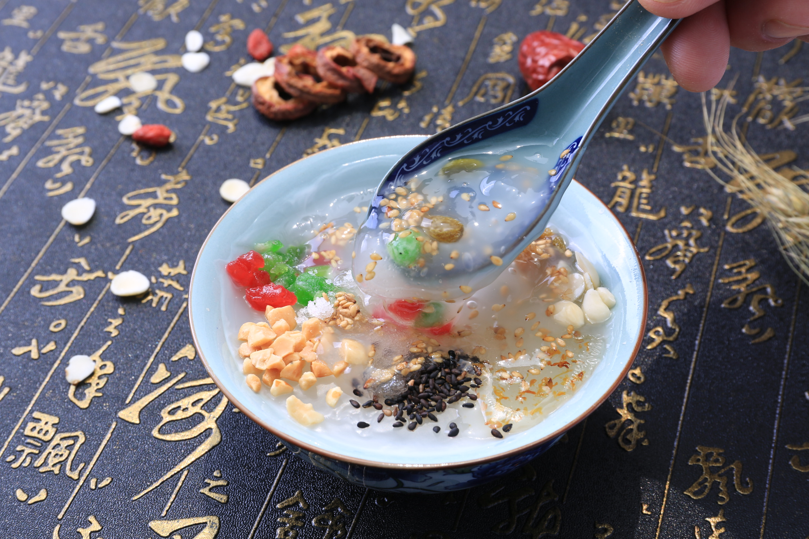

欢迎来到云上七色花！
茶汤百科
天津茶汤起源于明朝末年，因用水冲熟，如沏茶一般（并不是用茶叶），故名茶汤，天津茶汤特点为色泽粉红、质地细腻、香甜润口。
茶汤在天津鼓楼、古文化街、南市食品街等处，常能见到用奇特的龙嘴大铜壶冲茶汤卖的情景，这是颇具民俗特色、十分引人注目的场面。
《好嘴杨巴》原文
津门胜地，能人如林，此间出了两位卖茶汤的高手，把这种稀松平常的街头小吃，干得远近闻名。这二位，一位胖黑敦厚，名叫杨七；一位细白精明，人称杨八。杨七杨八，好赛哥俩，其实却无亲无故，不过他俩的爹都姓杨罢了。杨八本名杨巴，由于“巴”与“八”音同，杨巴的年岁长相又比杨七小，人们便错把他当成杨七的兄弟。不过要说他俩的配合，好比左右手，又非亲兄弟可比。杨七手艺高，只管闷头制作；杨巴口才好，专管外场照应，虽然里里外外只这两人，既是老板又是伙计，闹得却比大买卖还红火。
杨七的手艺好，关键靠两手绝活。
一般茶汤是把秫米面沏好后，捏一撮芝麻洒在浮头，这样做香味只在表面，愈喝愈没味儿。杨七自有高招，他先盛半碗秫米面，便洒上一次芝麻，再盛半碗秫米面，沏好后又洒一次芝麻。这样一直喝到见了碗底都有香味。
他另一手绝活是，芝麻不用整粒的，而是先使铁锅炒过，再拿擀面杖压碎。压碎了，里面的香味才能出来。芝麻必得炒得焦黄不糊，不黄不香，太糊便苦；压碎的芝麻粒还得粗细正好，太粗费嚼，太细也就没嚼头了。这手活儿别人明知道也学不来。手艺人的能耐全在手上，此中道理跟写字画画差不多。
可是，手艺再高，东西再好，拿到生意场上必得靠人吹。三分活，七分说，死人说活了，破货变好货，买卖人的功夫大半在嘴上。到了需要逢场作戏、八面玲珑、看风使舵、左右逢源的时候，就更指着杨巴那张好嘴了。
那次，李鸿章来天津，地方的府县道台费尽心思，究竟拿嘛样的吃喝才能把中堂大人哄得高兴？京城豪门，山珍海味不新鲜，新鲜的反倒是地方风味小吃，可天津卫的小吃太粗太土：熬小鱼刺多，容易卡嗓子；炸麻花梆硬，弄不好硌牙。琢磨三天，难下决断，幸亏知府大人原是地面上走街串巷的人物，嘛都吃过，便举荐出“杨家茶汤”；茶汤粘软香甜，好吃无险，众官员一齐称好，这便是杨巴发迹的缘由了。
这日下晌，李中堂听过本地小曲莲花落子，饶有兴味，满心欢喜，撒泡热尿，身爽腹空，要吃点心。知府大人忙叫“杨七杨八”献上茶汤。今儿，两人自打到这世上来，头次里外全新，青裤青褂，白巾白袜，一双手拿碱面洗得赛脱层皮那样干净。他俩双双将茶汤捧到李中堂面前的桌上，然后一并退后五步，垂手而立，说是听候吩咐，实是请好请赏。
李中堂正要尝尝这津门名品，手指尖将碰碗边，目光一落碗中，眉头忽地一皱，面上顿起陰云，猛然甩手“啪”地将一碗茶汤打落在地，碎瓷乱飞，茶汤泼了一地，还冒着热气儿。在场众官员吓懵了，杨七和杨巴慌忙跪下，谁也不知中堂大人为嘛犯怒？
当官的一个比一个糊涂，这就透出杨巴的明白。他眨眨眼，立时猜到中堂大人以前没喝过茶汤，不知道洒在浮头的碎芝麻是嘛东西，一准当成不小心掉上去的脏土，要不哪会有这大的火气？可这样，难题就来了——
倘若说这是芝麻，不是脏东西，不等于骂中堂大人孤陋寡闻，没有见识吗？倘若不加解释，不又等于承认给中堂大人吃脏东西？说不说，都是要挨一顿臭揍，然后砸饭碗子。而眼下顶要紧的，是不能叫李中堂开口说那是脏东西。大人说话，不能改口。必须赶紧想辙，抢在前头说。
杨巴的脑筋飞快地一转两转三转，主意来了！只见他脑袋撞地，“咚咚咚”叩得山响，一边叫道：“中堂大人息怒！小人不知道中堂大人不爱吃压碎的芝麻粒，惹恼了大人。大人不记小人过，饶了小人这次，今后一定痛改前非！”说完又是一阵响头。
李中堂这才明白，刚才茶汤上那些黄渣子不是脏东西，是碎芝麻。明白过后便想，天津卫九河下梢，人性练达，生意场上，心灵嘴巧。这卖茶汤的小子更是机敏过人，居然一眼看出自己错把芝麻当做脏土，而三两句话，既叫自己明白，又给自己面子。这聪明在眼前的府县道台中间是绝没有的，于是对杨巴心生喜欢，便说：
“不知者当无罪！虽然我不喜欢吃碎芝麻（他也顺坡下了），但你的茶汤名满津门，也该嘉奖！来人呀，赏银一百两！”
这一来，叫在场所有人摸不着头脑。茶汤不爱吃，反倒奖巨银，为嘛？傻啦？杨巴趴在地上，一个劲儿地叩头谢恩，心里头却一清二楚全明白。
自此，杨巴在天津城威名大震。那“杨家茶汤”也被人们改称做“杨巴茶汤”了。杨七反倒渐渐埋没，无人知晓。杨巴对此毫不内疚，因为自己成名靠的是自己一张好嘴，李中堂并没有喝茶汤呀！
津门胜地，能人如林，此间出了两位卖茶汤的高手，把这种稀松平常的街头小吃，干得远近闻名。这二位，一位胖黑敦厚，名叫杨七；一位细白精明，人称杨八。杨七杨八，好赛哥俩，其实却无亲无故，不过他俩的爹都姓杨罢了。杨八本名杨巴，由于“巴”与“八”音同，杨巴的年岁长相又比杨七小，人们便错把他当成杨七的兄弟。不过要说他俩的配合，好比左右手，又非亲兄弟可比。杨七手艺高，只管闷头制作；杨巴口才好，专管外场照应，虽然里里外外只这两人，既是老板又是伙计，闹得却比大买卖还红火。
杨七的手艺好，关键靠两手绝活。
一般茶汤是把秫米面沏好后，捏一撮芝麻洒在浮头，这样做香味只在表面，愈喝愈没味儿。杨七自有高招，他先盛半碗秫米面，便洒上一次芝麻，再盛半碗秫米面，沏好后又洒一次芝麻。这样一直喝到见了碗底都有香味。
他另一手绝活是，芝麻不用整粒的，而是先使铁锅炒过，再拿擀面杖压碎。压碎了，里面的香味才能出来。芝麻必得炒得焦黄不糊，不黄不香，太糊便苦；压碎的芝麻粒还得粗细正好，太粗费嚼，太细也就没嚼头了。这手活儿别人明知道也学不来。手艺人的能耐全在手上，此中道理跟写字画画差不多。
可是，手艺再高，东西再好，拿到生意场上必得靠人吹。三分活，七分说，死人说活了，破货变好货，买卖人的功夫大半在嘴上。到了需要逢场作戏、八面玲珑、看风使舵、左右逢源的时候，就更指着杨巴那张好嘴了。
那次，李鸿章来天津，地方的府县道台费尽心思，究竟拿嘛样的吃喝才能把中堂大人哄得高兴？京城豪门，山珍海味不新鲜，新鲜的反倒是地方风味小吃，可天津卫的小吃太粗太土：熬小鱼刺多，容易卡嗓子；炸麻花梆硬，弄不好硌牙。琢磨三天，难下决断，幸亏知府大人原是地面上走街串巷的人物，嘛都吃过，便举荐出“杨家茶汤”；茶汤粘软香甜，好吃无险，众官员一齐称好，这便是杨巴发迹的缘由了。
这日下晌，李中堂听过本地小曲莲花落子，饶有兴味，满心欢喜，撒泡热尿，身爽腹空，要吃点心。知府大人忙叫“杨七杨八”献上茶汤。今儿，两人自打到这世上来，头次里外全新，青裤青褂，白巾白袜，一双手拿碱面洗得赛脱层皮那样干净。他俩双双将茶汤捧到李中堂面前的桌上，然后一并退后五步，垂手而立，说是听候吩咐，实是请好请赏。
李中堂正要尝尝这津门名品，手指尖将碰碗边，目光一落碗中，眉头忽地一皱，面上顿起陰云，猛然甩手“啪”地将一碗茶汤打落在地，碎瓷乱飞，茶汤泼了一地，还冒着热气儿。在场众官员吓懵了，杨七和杨巴慌忙跪下，谁也不知中堂大人为嘛犯怒？
当官的一个比一个糊涂，这就透出杨巴的明白。他眨眨眼，立时猜到中堂大人以前没喝过茶汤，不知道洒在浮头的碎芝麻是嘛东西，一准当成不小心掉上去的脏土，要不哪会有这大的火气？可这样，难题就来了——
倘若说这是芝麻，不是脏东西，不等于骂中堂大人孤陋寡闻，没有见识吗？倘若不加解释，不又等于承认给中堂大人吃脏东西？说不说，都是要挨一顿臭揍，然后砸饭碗子。而眼下顶要紧的，是不能叫李中堂开口说那是脏东西。大人说话，不能改口。必须赶紧想辙，抢在前头说。
杨巴的脑筋飞快地一转两转三转，主意来了！只见他脑袋撞地，“咚咚咚”叩得山响，一边叫道：“中堂大人息怒！小人不知道中堂大人不爱吃压碎的芝麻粒，惹恼了大人。大人不记小人过，饶了小人这次，今后一定痛改前非！”说完又是一阵响头。
李中堂这才明白，刚才茶汤上那些黄渣子不是脏东西，是碎芝麻。明白过后便想，天津卫九河下梢，人性练达，生意场上，心灵嘴巧。这卖茶汤的小子更是机敏过人，居然一眼看出自己错把芝麻当做脏土，而三两句话，既叫自己明白，又给自己面子。这聪明在眼前的府县道台中间是绝没有的，于是对杨巴心生喜欢，便说：
“不知者当无罪！虽然我不喜欢吃碎芝麻（他也顺坡下了），但你的茶汤名满津门，也该嘉奖！来人呀，赏银一百两！”
这一来，叫在场所有人摸不着头脑。茶汤不爱吃，反倒奖巨银，为嘛？傻啦？杨巴趴在地上，一个劲儿地叩头谢恩，心里头却一清二楚全明白。
自此，杨巴在天津城威名大震。那“杨家茶汤”也被人们改称做“杨巴茶汤”了。杨七反倒渐渐埋没，无人知晓。杨巴对此毫不内疚，因为自己成名靠的是自己一张好嘴，李中堂并没有喝茶汤呀！
茶汤图片

茶汤特色
茶汤是一种甜饮食，和藕粉相类，原料是秫米面(高粱米面)、糜子面用开水冲食。但它有一套冲制的技巧，非熟手不可。先把茶汤原料在碗内调好，放好糖与桂花卤；然后再在高大、体重的铜壶中装满滚开的水。售者一手执碗，一手扶壶柄，必须双脚撇开半蹲式，才能立稳。左手的碗，正好等在壶嘴边，等水一冲出，碗要随时变换距离，以掌握开水适量来控制它的厚薄程度，并不使开水外溢，激出糖浆，这是技巧之一。右手要有足够的控制力量，开水一出壶口，正好注入碗内。要一次完成，才能冲熟茶汤，否则滴滴嗒嗒注水，茶汤必生，不能吃，那就亏本了。同时也要注意水出得猛，会浇在自己手上，烫了自己，也碎了碗，就更不合算了，这是技巧之二。所以卖茶汤没有这一身技巧是做不了的。那些老手，开水出口，碗口和壶口距离有时在一二尺的地方。开水全部入碗，点滴不外溢，而且说止即止，一次冲熟，厚薄合乎要求，从来没见过加水再冲，或冲坏一碗再换一碗的。茶汤滋味储蓄，除香甜外，有一股谷物地朴实之气，给人以亲切感。
食谱特色
特点：本品质地细腻，味道甜香，系北京小吃，回民风味。因将碗翻扣过来而茶汤不洒，故有此“扣碗茶汤”之称。
茶汤有两个特色：一是冲制方法特殊，用开水冲的方法将茶汤冲熟；二是用具特殊，使有一把龙嘴紫铜大壶。它重9-9.5公斤，可盛水40公斤。当壶心炭火把水烧开到100度时，才能冲熟茶汤。铜壶盖旁的小汽笛“呜呜”响着，冲茶汤的师傅一手端碗，一手掀起铜壶，壶嘴向下倾斜，一股沸水直冲碗内，刹那间水满茶汤熟。
食疗功效
适宜中气不足所致食欲不振、食后易胀者食用;适宜脾胃升降失和所致大便频数、气少乏力;适宜血分有热所致咯血、便血以及妇女崩漏下血者食用。
1、消食：有助于胃酸的分泌和食物的消化，宜于治疗饮食积滞证。
2、止血凉血：适宜出血性疾病的患者。适宜月经过多，血崩的妇女
原材料
原料：糜子米500克，红糖200克，白糖100克，糖桂花10克，金糕丁、青梅丁各适量。
制作方法
1、先将糜子米淘洗干净，用凉水浸泡2—3小时，碾成面，然后过细箩，即成糜子面。
2、将茶汤壶内的水烧开。
3、取小碗1个，先倒入50克开水和10克凉水搅和一下，再放入1/10的糜子面调成面糊，然后左手端着盛面糊的碗紧对着茶壶嘴，右手握着壶把子将壶倾斜，使壶内的开水顺着壶嘴冲入碗内。这时速将碗与壶嘴由近而远地拉大距离，以加大水的冲力，以使面糊冲得均匀；随后又由远至近，面糊即冲成杏黄色的茶汤。
4、冲好一碗后，即在茶汤上撒上红糖20克、白糖10克和糖桂花1克。也可再撒些金糕丁、青梅丁之类的食品。本配料用量可制作10碗。